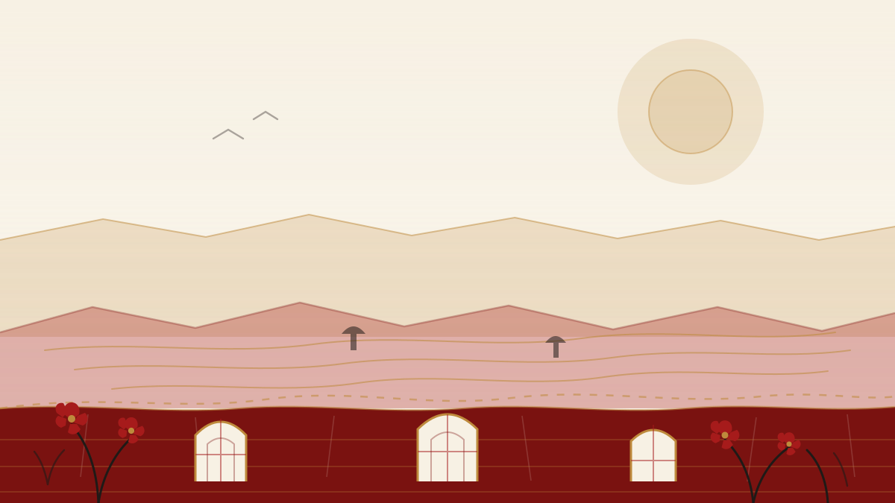

长征白银市 · 会宁县
红军会宁会师旧址
1936 年 10 月 9 日，红四方面军指挥部到达会宁，同红一方面军会合。会师楼、会师纪念塔与红军长征胜利纪念馆，都在这座小城里。
壹 · 可点地图
这是一张简化示意图，不是严格比例尺下的行政区划图。十四个节点分布在河西走廊、陇中、陇东、陇南与甘南：点击任意节点，右侧会展开它的故事。
地图为简化示意图，非严格比例尺；小屏可横向滑动查看。节点支持 Tab 聚焦、Enter 或空格触发，也可用方向键依次浏览。
红色圆点为可点击地标（共 14 个）
贰 · 筛选与检索
十七处地标按主题类型与所在市州做了整理。你可以先选类型，再看市州，最后用关键词缩小范围；筛选结果会实时更新。
共 17 处地标
长征白银市 · 会宁县
1936 年 10 月 9 日，红四方面军指挥部到达会宁，同红一方面军会合。会师楼、会师纪念塔与红军长征胜利纪念馆，都在这座小城里。
西路军武威市 · 古浪县
1936 年 11 月，红 9 军在古浪与敌血战四昼夜，歼敌 2000 多名，自身伤亡 2400 多名。纪念馆用三个展厅讲述这段战史。
西路军金昌市 · 永昌县
永昌保卫战是西路军在河西走廊内的重要一役。红西路军永昌战役纪念馆由永昌革命烈士陵园发展而来，记录那段寒冬里的坚守。
西路军张掖市 · 高台县
1937 年 1 月 20 日，高台城失陷，董振堂、杨克明等壮烈牺牲。中国工农红军西路军纪念馆由原高台烈士陵园更名扩建而来。
西路军张掖市 · 临泽县
1937 年 3 月，西路军在临泽梨园口遭敌围攻。梨园口战役纪念馆之外，倪家营汪家墩等战斗遗址也散落在临泽境内。
西路军张掖市 · 肃南县
1937 年 3 月 14 日黄昏，西路军总部在肃南石窝山召开最后一次军政委员会扩大会议，决定将余部编为三个支队分散游击。
纪念设施兰州市
1937 年，红军在兰州设立联络处，后改称八路军驻甘肃办事处。谢觉哉任中共中央代表，彭加伦、伍修权先后任处长。
长征定西市 · 通渭县
1935 年 9 月 27 日，中共中央政治局常委会议在通渭榜罗镇召开，正式确定把中央和陕甘支队的落脚点放在陕北。
长征陇南市 · 宕昌县
1935 年 9 月，红军在哈达铺获得粮食、给养，并从当地报纸上得知陕北有红军和根据地，这里因此被称为长征路上的“加油站”。
兵变与起义陇南市 · 两当县
1932 年 4 月 2 日凌晨，习仲勋等领导发动两当兵变，起义部队改编为中国工农红军陕甘游击队第五支队。
长征甘南州 · 迭部县
1935 年 9 月 16—17 日，红军攻克天险腊子口，打开北上通道。腊子口战役纪念碑就立在这处隘口，守着长征最后的险关。
人物故居甘南州 · 卓尼县
卓尼土司杨积庆在红军过境甘南时让道、开仓接济三十万斤粮食。1937 年他遇害，1994 年被追认为革命烈士。
根据地庆阳市 · 华池县
1934 年 11 月，陕甘边区苏维埃政府在南梁荔园堡成立，习仲勋任苏维埃政府主席。南梁是陕甘边革命根据地的中心。
长征平凉市 · 静宁县
1935 年 10 月 3 日，毛泽东等率中央红军到达静宁界石铺并宿营三天。纪念园由“红军长征纪念馆”更名扩建而来。
长征甘南州 · 迭部县
1935 年 9 月 12 日，中共中央政治局扩大会议在迭部俄界（高吉村）召开，坚持北上方针。旧址现存藏式木板房院落。
长征庆阳市 · 环县
1936 年 11 月，山城堡战役在环县进行，歼灭国民党军一部，被誉为“长征最后一战”。纪念园位于环县山城乡。
长征定西市 · 岷县
1936 年 9 月 16—18 日，中共中央西北局在岷县三十里铺召开岷州会议，否定西进计划，为红军继续北上奠定基础。
没有找到符合条件的地标
试试更换类型、市州，或清空关键词。
叁 · 地标一览
表格按类型与市州整理，方便快速比对。地标名称以中央党史和文献研究院、甘肃省红色纪念馆等公开资料中的全称为准。
| 地标 | 所在市州 | 类型 | 主题 |
|---|---|---|---|
| 红军会宁会师旧址 | 白银市 | 长征 | 三军会师 |
| 红军西路军古浪战役纪念馆 | 武威市 | 西路军 | 古浪战役 |
| 红西路军永昌战役纪念馆 | 金昌市 | 西路军 | 永昌战役 |
| 中国工农红军西路军纪念馆 | 张掖市 | 西路军 | 高台战役 |
| 梨园口战役纪念馆 | 张掖市 | 西路军 | 梨园口战斗 |
| 石窝会议纪念馆 | 张掖市 | 西路军 | 肃南石窝会议 |
| 八路军兰州办事处纪念馆 | 兰州市 | 纪念设施 | 抗战后方 |
| 榜罗镇会议纪念馆 | 定西市 | 长征 | 落脚陕北 |
| 哈达铺红军长征纪念馆 | 陇南市 | 长征 | 长征“加油站” |
| 两当兵变纪念馆 | 陇南市 | 兵变与起义 | 两当兵变 |
| 腊子口战役纪念碑 | 甘南州 | 长征 | 天险腊子口 |
| 杨积庆烈士纪念馆 | 甘南州 | 人物故居 | 让道供粮 |
| 陕甘边革命根据地南梁革命纪念馆 | 庆阳市 | 根据地 | 陕甘边根据地 |
| 中国工农红军长征界石铺纪念园 | 平凉市 | 长征 | 界石铺宿营 |
| 俄界会议旧址 | 甘南州 | 长征 | 俄界会议 |
| 山城堡战役纪念园 | 庆阳市 | 长征 | 长征最后一战 |
| 中共中央西北局岷州会议纪念馆 | 定西市 | 长征 | 岷州会议 |
注：本表为本站整理，共收录 17 处地标，覆盖 10 个市州。可点地图展示其中 14 个节点；其余 3 处（俄界会议旧址、山城堡战役纪念园、中共中央西北局岷州会议纪念馆）在地标卡与表格中呈现。
肆 · 研学路线
三条线路分别从兰州、庆阳、张掖出发，串起长征、根据地与西路军三条历史线索。时间与顺序可按实际情况调整。
线路一 · 2 日
第一天在兰州参观八路军兰州办事处纪念馆，下午赴会宁，看会师楼与会师纪念塔；第二天到静宁界石铺，走一走长征最后一段路。
线路二 · 2 日
第一天到华池南梁，看陕甘边区苏维埃政府成立地荔园堡与南梁革命纪念馆；第二天赴环县山城堡，了解长征最后一战。
线路三 · 3 日
第一天在高台参观中国工农红军西路军纪念馆；第二天到临泽，走访梨园口战役纪念馆与倪家营战斗遗址；第三天进肃南，在石窝会议纪念馆为这段行程收束。

伍 · 继续前行
地标是一处处坐标，也是一段段可以走进去的历史。看完地图，下一页去看看今天的青年如何把这些故事讲下去。